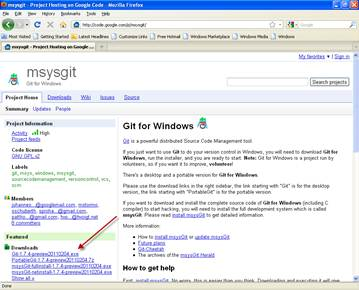
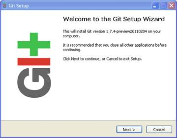
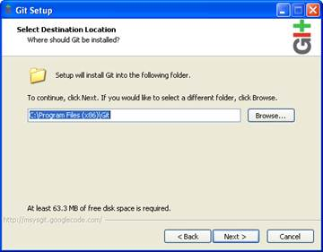
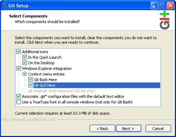
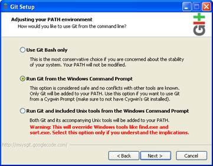
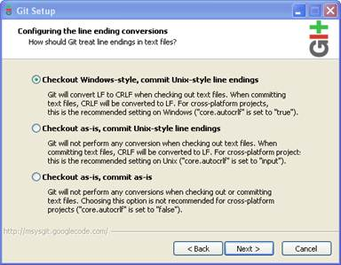
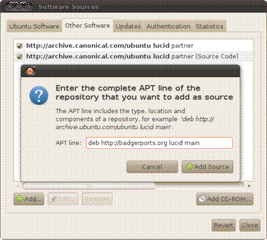

Guide to Installing Git4Win
Contents
Installation on Ubuntu 10.04 LTS
Installation on other Distributions and Versions
Document date: Wednesday, March 16, 2011
Git is a popular source / revision control system. Git4Win is one of few Windows GUI front-ends for the Git command line tool. Both of these packages are in public domain, fully available and free to use.
This guide describes how to install Git4Win on Windows and Linux OS’es.
The screenshots shown in this manual may be different from the actual images that you might see due to differences in software versions and of a particular setup.
Git4Win is written in C# and uses .NET 3.5 framework. The same binary file (“Git4Win.exe”) runs as-is on both Windows and Linux OS’es. The tool comprises of only that one file and needs no particular installation – just copy it to a folder of your choice and run it.
Consequently, the main requirements are having .NET support and the actual git tool.
Git’s overall functionality and its command line tool
options are extremely numerous and too versatile to be able to fully wrap them
with any GUI, so the goal of Git4Win is to provide visual front end to most
common operations and then move out of the way when one does need to do a more
elaborate command line gymnastic. Therefore, Git4Win does not keep much state
information. Whatever you do within a repo, the GUI will pick it up on a first
refresh (F5) allowing you to mix and match operations as you feel the need for
it.
That said, Git4Win is still powerful enough to be used exclusively, without
calling up a command line Git tool. It may just as well satisfy all the needs
of many users.
When installing Git on Windows, there are basically 2 choices: mSysGit and Cygwin. At this time, Git4Win supports only mSysGit.
Install Git for Windows from Google code: http://code.google.com/p/msysgit/

Select the “Git-1.7.4-preview20110204.exe” or any newer version, if available. Download it and run it.

When asked for the destination location, select the default folder:

When asked for the components to install, you can either leave the suggested ones, or you can also select to have Git available from the Explorer context menu (recommended):

When presented with the PATH option, select to add Git to your path:

The disparity between Windows and Unix line endings can be handled by Git in several ways. I suggest leaving the default option to change the line endings accordingly as this will work with all Windows editors:

That’s it! You have basic Git command line tools installed on your Windows:
If you selected it during your installation, you will also notice Git added to the Programs Menu and the Explorer shell extension.
Git4Win has been tested to work on Ubuntu, although it should also work on any other modern Linux distribution if the same supporting environment is present.
These installation steps assume that you have a clean install of the operating system with all recent updates applied (using the Update Manager). Although it assumes x64 versions, x32 versions should work identically.
The installation breaks down into installing the git command line tools and installing the required version of Mono (http://www.mono-project.com) and its supporting WinForms assembly package.
By default, Ubuntu does not have git version control system installed. Install git command line tools either using the Synaptic Package Manager (serach for and install “git” package) or by issuing a command:
$ sudo apt-get install git
Verify that you have git running by issuing a command:
$ git --version
This version of Ubuntu comes preinstalled with mono framework supporting the required .NET level. However, the WinForms assembly still needs to be added, “libmono-winforms2.0-cil”:
Open System->Administration->Synaptic Package Manager, paste that package name into the search box, select it for install and install it.
Ubuntu 10.04 LTS includes mono version 2.4.4 which should be sufficient to run Git4Win.
However, the WinForms assembly still needs to be added, “libmono-winforms2.0-cil”:
Open System->Administration->Synaptic Package Manager, paste that package name into the search box, select it for install and install it.
If the required version of Mono support is not installed, you will need to update it. The update is fairly simple (as described on http://badgerports.org):
Badgerports is an Ubuntu repository. In order to use it, you must add it to your Software Sources.

From now on, whenever you try to install or update
Mono-related packages on your system, you will be given the badgerports
version for preference. You don't need to do anything more than update your
system as usual to get started!
Now update mono via
System->Administration->Update Manager:
You may see a download size of 7.5Mb, 21 files
selected.
One more component to install is “libmono-winforms2.0-cil”:
Open System->Administration->Synaptic Package Manager, paste that package into the search box, select it for install and install it.
When Git4Win starts, it tries to detect diff and merge utilities to use. It is recommended to have one of these installed before running the application although you can always set them in Settings menu.
These are the few common diff and merge utilities that Git4Win knows about:
Windows OS:
Perforce Merge Tool http://www.perforce.com/perforce/products/merge.html
WinMerge http://winmerge.org
Beyond Compare 3 http://www.scootersoftware.com
KDiff3 http://kdiff3.sourceforge.net
Linux OS:
KDiff3 http://kdiff3.sourceforge.net
TKDiff http://tkdiff.sourceforge.net
Meld http://meld.sourceforge.net/index.html\
Xxdiff http://furius.ca/xxdiff
Diffuse http://sourceforge.net/projects/diffuse
On Linux OS, installing many of these utilities is as simple as typing “sudo apt-get install <name>” where <name> is a specific diff or merge utility.
There is no installer.
Just copy and run the “Git4Win.exe” executable on either or both Windows and Linux OS and you are done (installing).